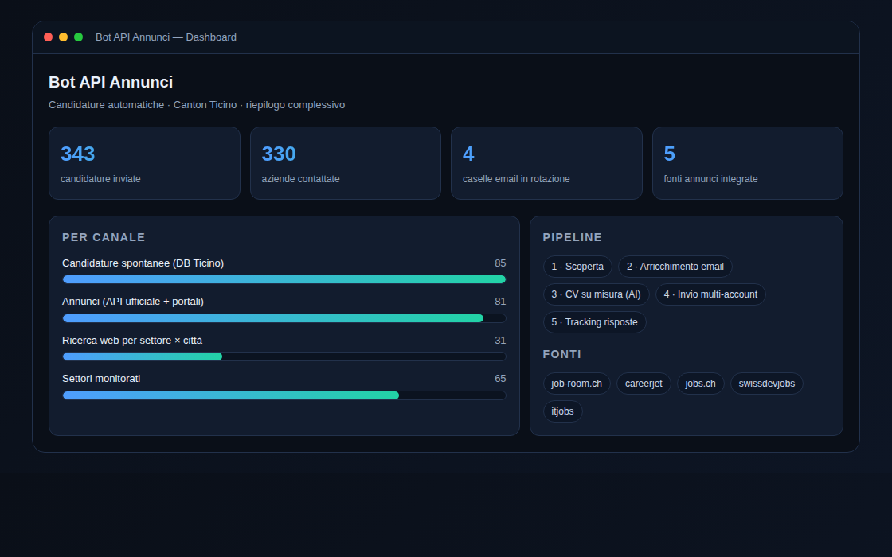
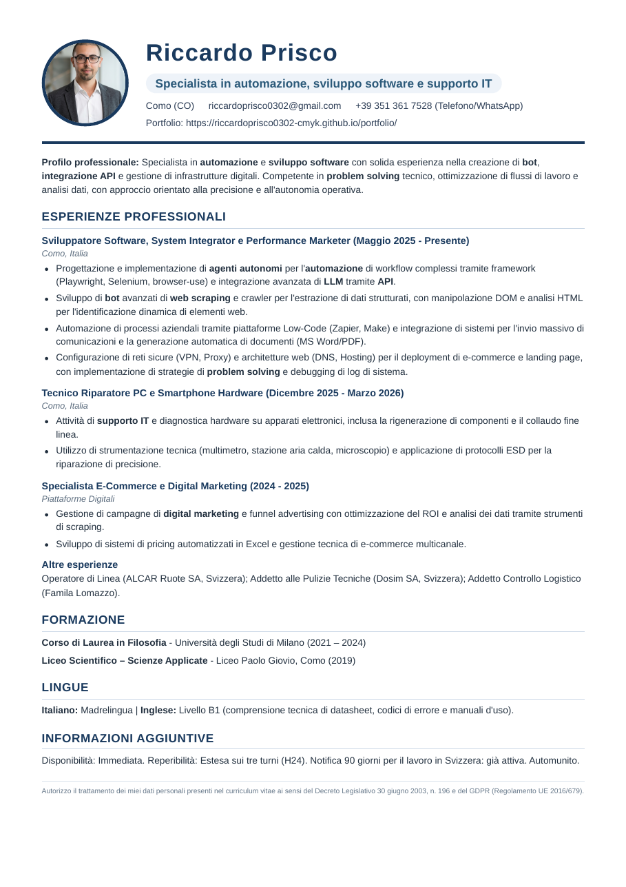

Automazioni end-to-end: ricerca dati, contatti, comunicazione e AI. Base a Como, attivo tra Italia e Canton Ticino.
Chi sono
Trasformo processi ripetitivi in sistemi automatici e affidabili. Uso Python, API, scraping, modelli AI e strumenti di sistema — con attenzione a qualità, costi e robustezza.
Progetti
Sistema completo che trova offerte di lavoro, risale ai contatti delle aziende, genera un curriculum su misura per ogni posizione e invia la candidatura via email, tracciando le risposte. Lavora in autonomia, su più canali e più caselle di posta.
La pipeline, in 5 fasi

Dashboard reale del bot (dati reali).
API pubbliche e feed RSS: job-room.ch (ufficiale SECO), careerjet, jobs.ch + feed tech svizzeri. Niente browser, niente CAPTCHA.
Trova il sito, esplora le pagine giuste ed estrae l'email con l'IA. Filtro anti-bounce per non sprecare invii.
Curriculum tagliato sull'annuncio: titolo esatto, parole chiave, esperienze più attinenti — solo dati reali. Output HTML→PDF.
Più account con tetto giornaliero, rotazione, blacklist dei rimbalzi e pre-check di oggetto, corpo e allegato.
Gestione quote/rate-limit con cooldown e fallback, circuit breaker, ripresa automatica e riepiloghi per run/giorno/settimana.
Oltre agli annunci: a tappeto da database aziende + ricerca web per settore×città, e studi professionali come segreteria/amministrazione.
Il curriculum
Niente modelli generici: per ogni annuncio il bot genera un curriculum tagliato sulla posizione (titolo esatto, parole chiave, esperienze più attinenti), ordinato e professionale. Ecco un esempio reale.

I numeri
Lavoriamo insieme
Realizzo automazioni su misura per aziende e privati: dal bot alla dashboard.
Processi ripetitivi trasformati in flussi automatici che lavorano per te.
Raccolta dati da siti e API, con pulizia e organizzazione automatica.
Modelli AI dentro i tuoi processi: analisi, generazione e decisioni automatiche.
Monitoraggio chiaro di quello che conta, con riepiloghi automatici.
Contatti
Per collaborazioni o automazioni su misura: